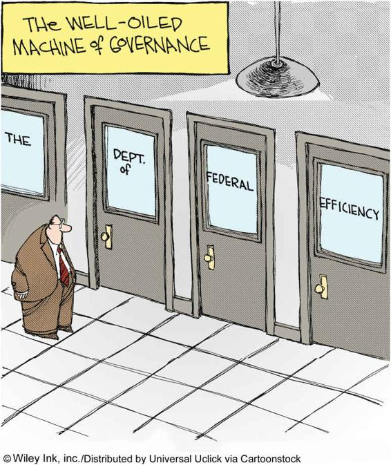

Max Weber developed the first systematic interpretation of the rise of modern organizations. Organizations, he argued, are ways of coordinating the activities of human beings or the goods they produce in a stable way across space and time. Weber emphasized that the development of organizations depends on the control of information, and he stressed the central importance of writing in this process. An organization needs written rules to function and files in which to store its “memory.” Weber saw organizations as strongly hierarchical, with power tending to concentrate at the top. Was Weber right? It matters a great deal, for Weber detected a clash as well as a connection between modern organizations and democracy that he believed had far-reaching consequences for social life.
Bureaucracy
All large-scale organizations, according to Weber, tend to be bureaucratic in nature. The word bureaucracy was coined in 1745 by Jean-Claude Marie Vincent de Gournay, who combined the word bureau, meaning both an office and a writing table, with the suffix cracy, a term derived from the Greek verb meaning “to rule.” Bureaucracy is thus the rule of officials. The term was first applied only to government officials, but it gradually came to refer to large organizations in general.
From the beginning, the concept was used disparagingly. De Gournay spoke of the developing power of officials as “an illness called bureaumania.” The nineteenth-century French novelist Honoré de Balzac saw bureaucracy as “the giant power wielded by pygmies.” This view persists today. Bureaucracy is frequently associated with red tape, inefficiency, and wastefulness. Others, however, have seen bureaucracy as a model of carefulness, precision, and effective administration. Bureaucracy, they argue, is the most efficient form of human organization, because, in it, all tasks are regulated by strict procedures.
Weber’s account of bureaucracy steers between these two extremes. A limited number of bureaucratic organizations, he pointed out, existed in traditional civilizations. For example, a bureaucratic officialdom in imperial China was responsible for the overall affairs of government. But only in modern times have bureaucracies developed fully.
According to Weber, the expansion of bureaucracy is inevitable in modern societies; bureaucratic authority is the only way of coping with the administrative requirements of large-scale social systems. However, as we will see, Weber also believed bureaucracy exhibits a number of major failings that have important implications for modern social life.
To study the origins and nature of bureaucratic organizations, Weber constructed an ideal type of bureaucracy. (Ideal here refers not to what is most desirable but to a pure form of bureaucratic organization, one that accentuates certain features of real cases so as to pinpoint essential characteristics.) Weber (1979; orig. 1921) listed several characteristics of the ideal type of bureaucracy:
There is a clear-cut hierarchy of authority. Tasks in the organization are distributed as “official duties.” A bureaucracy looks like a pyramid, with the positions of highest authority at the top. A chain of command stretches from top to bottom, thus making possible the coordination of decisions. Each higher office controls and supervises the one below it in the hierarchy.
Written rules govern the conduct of officials at all levels of the organization. This does not mean that bureaucratic duties are just a matter of routine. The higher the office, the more the rules tend to encompass a wide variety of cases and to demand flexibility in their interpretation.
Officials work full time and are salaried. Each job in the hierarchy has a definite and fixed salary attached to it. Individuals are expected to make a career within the organization. Promotion is possible on the basis of capability, seniority, or a combination of the two.
There is a separation between the tasks of an official within the organization and his or her life outside. The home life of the official is distinct from his or her activities in the workplace and is also physically separated from it.
No members of the organization own the materials with which they operate. The development of bureaucracy, according to Weber, separates workers from the control of their means of production. In traditional communities, farmers and craft workers usually had control over their processes of production and owned the tools they used. In bureaucracies, officials do not own the offices they work in, the desks they sit at, or the office machinery they use.
While bureaucracy is often associated with long lines and excessive paperwork, it can also be an efficient way to organize modern societies. Here, a young woman attends a Dream Relief workshop, where undocumented immigrants can apply for work permits and deportation deferrals.
Weber believed that the more an organization approaches the ideal type of bureaucracy, the more effective it will be in reaching its goals. He likened bureaucracies to sophisticated machines operating according to rational principles (see Chapter 1). Yet he also recognized that bureaucracy could be inefficient and that many bureaucratic jobs are dull, offering little opportunity for creativity. Although Weber feared that the bureaucratization of society could have negative consequences, he concluded that bureaucratic routine and the authority of officialdom were the prices we pay for the technical effectiveness of bureaucratic organizations. Since Weber’s time, the bureaucratization of society has become more widespread. Critics of this development who share Weber’s initial concerns have questioned whether the efficiency of rational organizations comes at a cost greater than Weber imagined. The most prominent of these critiques is known as the “McDonaldization” of society, which we will discuss later in this chapter.
Formal and Informal Relations within Bureaucracies
Weber’s analysis of bureaucracy gave prime place to formal relations within organizations, relations as stated in the organization rules. Weber had little to say about the informal connections and small-group relations that exist in all organizations. But in bureaucracies, informal ways of doing things often allow for a flexibility that couldn’t otherwise be achieved.
In a classic study, Peter Blau (1963) looked at informal relations in a government agency that investigated possible income-tax violations. Agents who came across difficult cases were supposed to discuss them with their immediate supervisor; the rules of procedure stated that they should not consult colleagues at their same level. Most agents were wary about approaching their supervisors, however, because they felt it might suggest a lack of competence on their part and reduce their chances for promotion. Hence, they usually consulted one another, violating the official rules. This breaking of the rules not only helped provide concrete advice but also reduced the anxieties involved in working alone. A cohesive set of loyalties representative of a primary group thus developed among those working at the same level. The problems these workers faced, Blau concludes, were probably addressed more effectively as a result. The group was able to develop informal procedures that allowed for more initiative and responsibility than the formal rules of the organization permitted.
Informal networks tend to develop at all levels of organizations. At the top, personal ties and connections may be more important than the formal situations in which decisions are supposed to be made. For example, meetings of boards of directors and shareholders supposedly determine the policies of business corporations. In practice, a few members of the board often run the corporation, making their decisions informally and expecting the rest of the board to approve them. Informal networks of this sort can also stretch across different corporations. Business leaders from different firms frequently consult one another informally and may belong to the same clubs and social circles.
Bureaucracies are often perceived as inefficient and fraught with red tape.
John Meyer and Brian Rowan (1977) argue that formal rules and procedures are usually quite distant from the practices an organization’s members actually adopt. Formal rules, in their view, are often “myths” that people profess to follow but that have little substance in reality. The rules serve to legitimize—to justify—ways in which tasks are carried out, even while these ways may diverge greatly from how the rules say things are supposed to be done. Formal procedures, Meyer and Rowan point out, often have a ceremonial or ritual character. People make a show of conforming to them but get on with their real work using other, more informal procedures. For example, rules governing ward procedure in a hospital help justify how nurses act toward patients. Thus, a nurse will faithfully fill in the chart at the end of a patient’s bed but will actually check progress by means of other, informal criteria—how the patient looks and whether the patient seems alert and lively. Rigorously keeping up the charts impresses the patients and keeps the doctors happy, but it is not always essential to the nurse’s assessments.
Deciding how much informal procedures help or hinder the effectiveness of organizations is not a simple matter. Systems that resemble Weber’s ideal type tend to give rise to a multitude of unofficial ways of doing things. This workaround happens partly because the flexibility that is lacking ends up being achieved by unofficial tinkering with formal rules. For those in dull jobs, informal procedures often create a more satisfying work environment. Informal connections among officials in higher positions may be effective in ways that aid the organization as a whole.
Table 6.1APPLYING SOCIOLOGY TO NETWORKS, GROUPS, AND ORGANIZATIONS
THEORY
APPROACH TO UNDERSTANDING GROUPS
CONTEMPORARY APPLICATION
Weber’s theory of organizations and bureaucracy
A bureaucracy is a type of organization with a clear hierarchy of authority, written rules of procedure, and full-time, salaried officials.
Students at a large university may be frustrated by red tape and bureaucracy, as they consult many different offices before arriving at an answer to a question about their tuition bill.
Foucault’s theory of surveillance
In hierarchical organizations, persons with lower levels of authority and status are especially susceptible to surveillance, including direct oversight by superiors, and the monitoring of one’s personal records like employment history.
Salesclerks at discount chain stores are monitored by hidden cameras, by having managers check to make sure their cash drawers equal their sales each night, and other forms of oversight.
Simmel’s theory of group size
Human interactions are shaped by group sizes. Larger groups have less intense interactions, because a larger number of potential smaller group relationships exist as outlets for individuals who are not getting along with other members of the group.
A college student is nervous about living with just one roommate (dyad), in case they don’t get along, and two roommates (triad), in case the other two “gang up” on her. A larger setting, like a group house or sorority, provides a greater number of less intense social ties.
Merton’s reference group theory
Reference groups provide a standard for judging one’s attitudes or behaviors. Humans use as reference groups people they know as well as people they don’t (e.g., media figures).
A star high school athlete feels very confident in their abilities, as they rank first in their school. However, when they compare their feats to Olympians their age, or when they compete in varsity sports in college, their own skills may feel less stellar in comparison.
The Control of Time and Space
Michel Foucault (1971, 1975) showed that the architecture of an organization is directly involved with its social makeup and system of authority. By studying the physical characteristics of organizations, we can shed new light on the problems Weber analyzed. The offices Weber discussed abstractly are also architectural settings—rooms, separated by corridors. The buildings of large firms are sometimes actually constructed as a hierarchy, in which the more elevated one’s position, the nearer to the top of the building one’s office is; not for nothing does “the top floor” refer to those who hold ultimate power in an organization.
In many other ways, the geography of an organization affects its functioning, especially when systems rely heavily on informal relationships. Physical proximity makes forming primary groups easier, whereas physical distance can polarize groups, resulting in a “them” and “us” attitude between departments.
In addition to direct supervision of subordinates’ work, surveillance also takes the form of files, records, and work histories.
The arrangement of rooms, hallways, and open spaces in an organization’s buildings provides basic clues to how the organization’s system of authority operates. In some organizations, people work collectively in open settings. Because of the dull, repetitive nature of certain kinds of industrial work, such as assembly-line production, regular supervision is needed to ensure that workers sustain the pace of labor. The same is often true of routine work carried out by telephone operators who respond to calls for information and who sit together where their activities are visible to their supervisors. Foucault laid great emphasis on how visibility, or lack of it, in the architectural settings of modern organizations influences and expresses patterns of authority. The level of visibility determines how easily subordinates can be subject to surveillance—the supervision of activities in organizations. In modern organizations, everyone, even those in relatively high positions of authority, is subject to surveillance; but the lowlier a person is, the more his or her behavior tends to be scrutinized.
Surveillance takes two forms. One is the direct supervision of the work of subordinates by superiors. Consider the example of a school classroom. Pupils sit at tables or desks, usually arranged in rows, all in view of the teacher. They are supposed to look alert or be absorbed in their work. Of course, the extent to which this actually happens depends on the abilities of the teacher to command attention and the inclinations of the children to do what is expected of them.
The second type of surveillance is subtler but equally important. It consists of keeping files, records, and case histories about people’s work lives. Weber realized the importance of written records (nowadays usually computerized) in modern organizations but did not fully explore how they could be used to regulate behavior. Employee records usually provide complete work histories, including personal details and often character evaluations. Such records are used to monitor employees’ behavior and assess recommendations for promotion. In many businesses, individuals at each level in the organization prepare annual reports on the performances of those in the level just below them. In schools, transcripts are used to monitor students’ performance as they move through the organization. Records are kept on file for academic staff, too.
Organizations cannot operate effectively if employees’ work is haphazard. In business firms, as Weber pointed out, people are expected to work regular hours. Activities must be consistently coordinated in time and space, something promoted by both the physical settings of organizations and the precise scheduling of detailed timetables, which regularize activities across time and space. In Foucault’s words, timetables “efficiently distribute bodies” around the organization. They are a condition of organizational discipline because they organize, or schedule, the activities of large numbers of people. If a university did not observe a lecture timetable, for example, it would soon collapse into complete chaos.
CONCEPT CHECKS
When groups become large, why does their intensity decrease but their stability increase?
What does the term bureaucracy mean?
Describe five characteristics of an ideal type of bureaucracy.